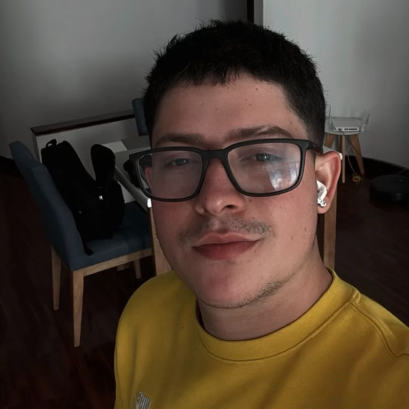

Quiénes hicimos Festa
Equipo Desparcha2
Seis integrantes de la materia Innovación Software apoyada en Nuevas Tecnologías de la Escuela Colombiana de Ingeniería Julio Garavito, semestre 2026-2. Cada uno trabajó en partes del producto y de la documentación.
Integrantes
- Brayan Loaiza Leal@brloa05
- Carlos Mario Piedrahita Arango@cmpiedrahita
- Isaac David Palomo Peralta@cntrIsaac
- Juan Sebastián Guayazán Clavijo@JuanGuayazanC
- Manuel Alejandro Guarnizo García@MAGG0059

Sebastián Duque Ceballos@0x0000cbsx
Contacto
Correo del proyecto
Código fuente